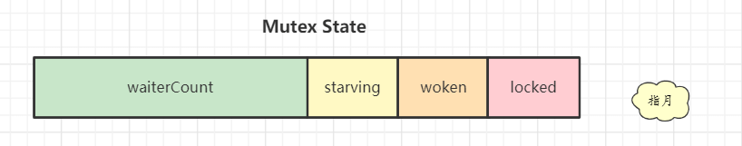

【Golang】Mutex 的实现原理
在Go语言中，实现并发编程相当简单，因此存在大量场景需要同步操作限制对临界区的修改，避免出现不可期望的情况。因此，Go 语言在 sync 中提供了大量的基本同步原语，例如，最常见的互斥锁 sync.Mutex，它的名字应该来源于：Mutual Exclusion 的前缀组合，它对外只暴露了两个方法：Lock 和 Unlock，本篇文章将详细了解加解锁背后的逻辑。
1 | // A Mutex is a mutual exclusion lock. |
加锁
正如上面所显示的源码，Mutex 的结构体足够简单，只有两个成员无需额外的初始化，其中 state 表示当前锁的状态，而 sema 是用于排队唤醒的信号量。state 的各个bit位的用途表示如下：

mutexLocked— 表示互斥锁的锁定状态；mutexWoken— 表示从正常模式被唤醒；mutexStarving— 当前的互斥锁进入饥饿状态；waitersCount— 当前互斥锁上等待的 Goroutine 个数
默认情况下呢，互斥锁的所有位都是0，表示未锁定状态，为了保证公平性，设计上锁是有两种状态的：正常状态和饥饿状态。
在正常模式下，所有等待锁的 goroutine 按照FIFO顺序等待。唤醒的goroutine不会直接拥有锁，而是会和新请求锁的goroutine竞争锁，因为新请求锁的goroutine 正在CPU上执行，把锁交给他可以最大化利用CPU的时间片，也因此刚刚唤醒的goroutine，也就是之前排队的goroutine有很大可能在锁竞争中失败。在这种情况下，这个被唤醒的goroutine会加入到等待队列的前面。 如果一个等待的goroutine超过1ms没有获取锁，那么它将会把锁转变为饥饿模式。
饥饿模式下，锁的所有权将从unlock的gorutine直接交给交给等待队列中的第一个。新来的goroutine将不会尝试去获得锁，即使锁看起来是unlock状态, 也不会去尝试自旋操作，而是放在等待队列的尾部。
如果一个等待的goroutine获取了锁，并且它是队列中的最后一个或者它的等待时间小于1ms，锁将由饥饿状态切换回正常状态。正常状态能最大化利用CPU，饥饿状态能有效防止尾部延迟，接下来我们分下代码的实现。
快速路径
快速路径下，直接通过CAS获取锁，如果当前锁的状态位全是0，也就是刚初始化的状态，那么直接上锁。
1 | func (m *Mutex) Lock() { |
慢速路径
如果没有通过快速路径直接获取到锁，那么就进入慢速路径，我们在理解这些代码的时候，要想象成很多goroutine都在执行这段代码，这样才能便于我们理解其中的意义所在。慢速路径中首先定义了一些状态：
1 | var waitStartTime int64 // 等待时间 |
如果当一个goroutine尝试加锁时，其他goroutine已经加锁且没有释放，而且锁处在正常模式下，那么就检查是否达到自旋的条件，如果可以那么就尝试自旋。对于是否能够自旋，需要满足以下以下条件：
-
需要多核CPU。因为如果是单核场景，自旋的goroutine在等待持有锁的goroutine释放锁，持有锁的goroutine在等待自旋的goroutine让出CPU，这种情况下自旋没有意义。或者说
GOMAXPROCS=1，又或者说GOMAXPROCS>1，但是当前只有1个P在运行，也和单核场景类似，意图就是除了当前的P之外还有人在干活，这种情况下自旋才有意义； -
当前P的本地 runq 为空。因为如果当前的P的runq不为空，与其让当前CPU自旋浪费CPU时间，还不如让CPU去执行runq的goroutine；
-
自旋的次数小于 4次，不能一直自旋；
所以就有了 runtime_canSpin 这样的实现：
1 | // src/runtime/proc.go |
在满足自旋条件之后，goroutine 在自旋之前会先争抢 mutex 的唤醒标识位，设置 mutexWoken 标识位的目的是，在正常模式下，告知持有锁的goroutine在unlock 的时候就不要唤醒其他的goroutine了，已经有goroutine在这里等候了，以免唤醒太多等待协程。
1 | // Don't spin in starvation mode, ownership is handed off to waiters |
这里的自旋是通过 runtime_doSpin() 来实现，底层是通过 proc 执行30次 PAUSE 指令来实现。在每次自旋结束之后都会重新检查自旋条件，如果已经自旋4次，或者锁被释放了，或者锁进入饥饿模式了，都会结束自旋。
1 | //go:linkname sync_runtime_doSpin sync.runtime_doSpin |
1 | // src/runtime/asm_arm64.s |
结束自旋或者根本没有自旋的goroutine就尝试通过原子操作修改mutex的状态，老的状态记为old，要修改的最终状态记为new，如果mutex没处于处于饥饿模式，就尝试设置lock位；如果处于饥饿状态或者加锁状态，那么他就得去排队，通过下面的代码实现：
1 | // Don't try to acquire starving mutex, new arriving goroutines must queue. |
如果当前goroutine等待的时间已经超过1ms，并且锁还没有被释放，那么就将锁切换成饥饿模式。这里要求进入饥饿模式必须是锁没有释放，是因为如果锁被释放了，那么怎么着也得先试试，否则进入饥饿模式就得直接排队：
1 | // The current goroutine switches mutex to starvation mode. |
在设置好相应的状态为，最终执行原子操作之前，如果当前goroutine持有唤醒标识，还要将唤醒标识位重置，因为接下来：
- 如果原子操作失败，当前goroutine操作期间，有其他goroutine修改了state，当前goroutine就得从头来过；
- 如果原子操作成功，抢到锁或者去排队，当前goroutine都不需要再被唤醒了；
1 | if awoke { |
完整计算 new 的代码如下：
1 | new := old |
接下来继续展开原子操作成功的分支，如果是抢到了锁，那么就直接退出了：
1 | if atomic.CompareAndSwapInt32(&m.state, old, new) { |
如果是排队规模设置成功了，还要决定排在队头还是队尾，如果当前goroutine已经排过对了，是被unlock操作唤醒的，那么就要排在队列头部；如果是第一次排队，那么就得排在等待队列的尾部，并且从第一次排队开始，记录当前goroutine的等待时间，接下来就会将自己休眠，进入到等待队列中：
1 | // If we were already waiting before, queue at the front of the queue. |
等到goroutine被唤醒时，会接着从上次休眠的位置继续执行。首先判断如果锁处于正常模式，会接着从自旋操作开始重新执行。如果唤醒之后发现锁处于饥饿模式，那就说明当前goroutine之前进入排队被放在了队首，此次自己被唤醒是因为要将锁给自己了，那么就只需要将mutex设置位加锁状态，并且将等待队列数目减1即可，再看看是不是切换回正常模式，更新好状态之后就可以退出了：
1 | starving = starving || runtime_nanotime()-waitStartTime > starvationThresholdNs |
解锁
解锁操作相对比较简单，首先将lock位减1，看最终得到状态是不是0，如果是就直接退出了：
1 | func (m *Mutex) Unlock() { |
如果进入到slowpath，说明除了lock位，还有其他位不为0。
-
如果一开始处在正常模式，并且等待队列不为空，或者已经有其他goroutine被换新获得了锁，或者锁进入了饥饿模式，那么不需要唤醒某个goroutine，直接返回即可；否则尝试设置mutex唤醒标志位，获取唤醒一个goroutine的权利，成功之后就会通过
runtime_Semrelease唤醒一个goroutine，唤醒的goroutine又要开始竞争了，如果不成功就循环尝试。 -
如果一开始就处于饥饿模式，那么就直接唤醒等待队列中的首个goroutine，将锁交给它，所以不用再设置唤醒标志位了。
1 | func (m *Mutex) unlockSlow(new int32) { |